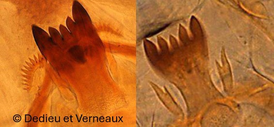
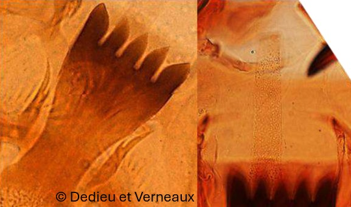

Sous famille des Tanypodinae
Mandibule avec une dent interne relativement développée, peigne de l'hypopharynx avec de nombreuses dents, corps sans soies


Ligula avec une dent médiane plus courte.
Pseudoradula avec une granulation peu marquée.
Ligula avec trois dents médianes de même longueur.
Pseudoradula avec granulation très marquée et non striée